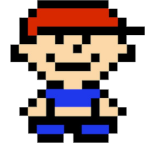

O jogo Mother 1, ou EarthBound Beginnings, foi lançado em 1989, no Japão. Publicado pela Nintendo, é um RPG de turno focado no personagem Ninten, que faz uso de seus poderes psíquicos para lutar contra inimigos que tentam o impedir de cumprir seus objetivos.
O jogo conta com alguns personagens. São eles:
Protagonista
